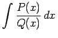
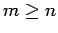

Integrale gebrochenrationaler Funktionen
Integrale gebrochenrationaler Funktionen , wobei P(x) und Q(x) Polynome vom Grade m bzw. n sind, werden algebraisch auf eine leicht integrierbare Form gebracht. Dazu dient die folgende Verfahrensweise:
- 1. Kürzung des Bruches
- bis P(x) und Q(x) keine gemeinsamen Teiler mehr enthalten.
- 2. Abspaltung des ganzrationalen Teiles,
- wenn  ist, indem P(x) durch Q(x) geteilt wird. Zu integrieren verbleiben dann ein Polynom und ein echter Bruch.
- 3. Zerlegung des Nenners
- Q(x) in lineare und quadratische Faktoren:
mit
- 4. Vorziehen des konstanten Koeffizienten
- an vor das Integralzeichen.
- 5. Zerlegung in eine Summe von Partialbrüchen:
- Der so erhaltene echte Bruch, der nicht mehr gekürzt werden kann und dessen Nenner in seine irreduziblen Faktoren zerlegt ist, wird in eine Summe von Partialbrüchen zerlegt, die leicht integriert werden können.